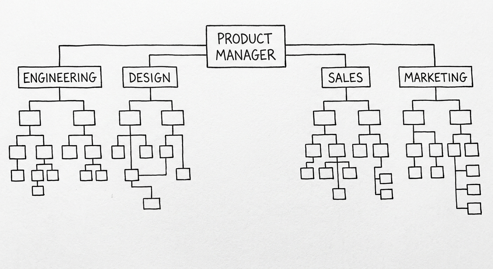
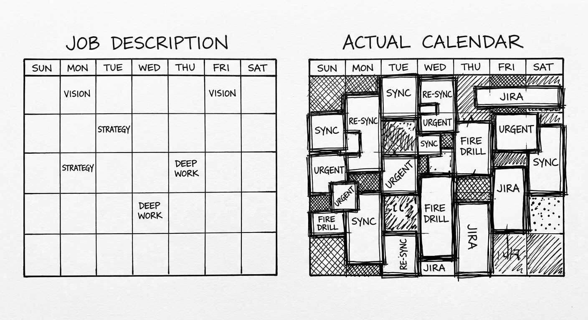
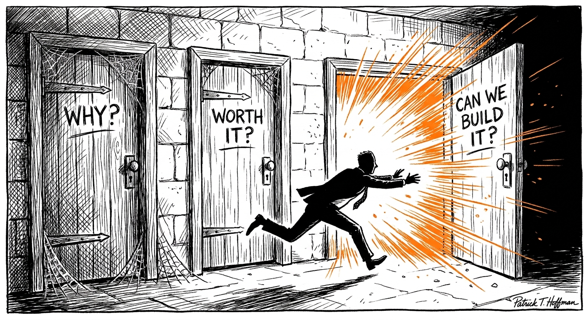

Chapter 1 What do PMs actually do?
Architect? had it right: apprenticeships define their professions.
PM had a bad one. "Watch me write docs and go to meetings" was the apprenticeship for a decade. Survive the grunt work, collect enough reps, eventually someone hands you a real decision. That ladder is gone. AI does the grunt work. There is no tedium left to survive. You get thrown into judgment on day one. Which means you don't have two years to figure out if you like it. You need to know now.
But before you can know whether you like it, you have to understand what it actually is — not what the job description says, not what your LinkedIn feed claims, not what the PM influencer with 200,000 followers posts about "owning the roadmap." What it is is simpler and harder than all of that.
1.1 How the role was born — and why that history matters
Product management as a discrete job title is roughly fifty years old. It did not come from tech. It came from packaged goods. A product manager at Procter & Gamble in the 1950s was a brand steward — responsible for a specific product's revenue, marketing, and competitive positioning. The role was explicitly cross-functional: you didn't control the factory, you didn't control the sales force, but you were accountable for the product's performance. Influence without authority. Sound familiar.
Tech companies borrowed the title in the 1980s and 1990s and changed what it meant. At Microsoft, early PMs were quasi-technical — close enough to engineering to write specifications but distinct enough to own the customer problem. The specification was the artifact. The product was the software. The job was bridging the two.
Google added scale and data. When a product serves hundreds of millions of users, intuition alone can't tell you what's true. PMs at Google learned to run experiments, interpret statistical significance, and distinguish signal from noise in dashboards that updated in real time. Data fluency became a PM prerequisite.
Facebook added growth. The growth PM archetype — someone obsessed with acquisition funnels, activation metrics, and compounding user curves — emerged from that era and spread everywhere. By 2015, every startup wanted a "growth PM." Most of them meant "someone who will A/B test button colors until the numbers go up."
Then AI arrived and changed the job again. Not by creating an "AI PM" specialization — that's a label that means three completely different things depending on who uses it. AI changed the job by automating the scaffolding that used to define PM work. The spec. The research synthesis. The first-draft document. The funnel analysis. All of it became available to anyone with a browser. What remained — what was always there underneath the scaffolding — was judgment. Problem selection. Narrative. Accountability.
The history matters because it tells you what's durable. The title has changed hands across industries and decades. The underlying work — someone who is accountable for a product's outcomes without controlling the people who build it — has stayed the same.

1.2 What PMs do all day: the honest version
If you ask a PM what they do all day, they'll usually describe a meeting or a document. Both answers are wrong in the same way: they're describing the container, not the content.
Here is a more honest account of a representative PM day, at a mid-sized company, not during a crisis:
8:30am. Slack is open. There are eleven messages from yesterday that didn't get resolved, one of which is from an engineer asking about a product decision that was supposedly documented six weeks ago but now has a new wrinkle. You read the thread. The wrinkle is real. You flag it.
9:00am. Weekly sync with design. You're reviewing a prototype for a feature that's been in progress for three weeks. The prototype is almost right. The designer asks you two questions you haven't fully answered yet: what happens for users who trigger the edge case, and what does the empty state say. Both require you to have an opinion about the user, not about the design. You give one answer with confidence and admit you need to think about the other. You leave the meeting with one more open question.
10:00am. You write the document that answers the question from the engineer. It's three paragraphs. It takes forty minutes. Twenty minutes is writing; twenty minutes is making sure you haven't introduced a new contradiction with something you decided three months ago that you can only half-remember.
10:45am. Your manager sends you a Slack: the VP of Sales mentioned in a leadership meeting that a customer wants a specific feature by end of quarter. This is the third time this particular customer has driven a roadmap conversation through back channels. You write a response to your manager that is simultaneously diplomatic about Sales and clear about what the tradeoff would be. You do not send it immediately. You wait fifteen minutes and reread it.
11:30am. Sprint planning. The engineering lead runs this. Your job here is to answer questions, not to direct. Three tickets have unclear acceptance criteria that only you can resolve. You resolve them. One turns out to be much larger than the estimate, and you have to make a call on whether to scope it down or push it out. You scope it down. You send a message to the stakeholder who asked for it explaining what's in and what's not.
1:00pm. You eat lunch. You read a competitor's app for twenty minutes because a user mentioned it on Twitter and you want to understand what they're talking about before someone asks you about it in a meeting.
2:00pm. A researcher from your user research team sends you the synthesis from five user interviews they ran last week. You read it carefully. It partially confirms what you already believed and partially contradicts it. The contradicting part is the part that matters. You schedule thirty minutes with the researcher to dig into it further.
3:00pm. A meeting with the data team. You're trying to understand why a metric moved last week. The analyst walks through three hypotheses. One of them is almost certainly right but you can't be sure without a segment cut that will take two days to run. You ask for it.
4:00pm. You have an hour that's actually free. You use it to write the roadmap update that's due tomorrow. You don't write about what you're building. You write about what you learned and what you're doing differently as a result. This is the part most PMs skip. The roadmap as a status update is a waste of everyone's time. The roadmap as a record of what changed your thinking — and why — is the version worth writing.
5:30pm. End of day. You have four open items from today's meetings. Two of them are genuinely urgent. You triage them. One you handle in twenty minutes. One you set a reminder to deal with tomorrow morning when you have more context.
Notice what didn't happen today: you didn't ship anything. You didn't write a single line of code. You didn't design anything. You didn't build a dashboard. You spent most of the day in conversation — written and verbal — making small decisions that will compound over weeks into a product that either solves something for someone or doesn't.
That is the job. The daily experience of it is: conversations, decisions, documents, and the low-grade anxiety of knowing that many of the things you decided today were made with incomplete information, and you won't find out for weeks whether they were right.

1.3 What PMs don't do (but everyone thinks they do)
The most damaging mythology in PM is "the PM is the CEO of the product." It's been repeated so many times it has calcified into received wisdom. It is wrong in almost every particular, and it causes real harm — to PMs who believe it about themselves and to the teams who work with them.
A CEO has formal authority. A PM almost never does. A CEO can hire and fire the people who build the product. A PM typically has no direct reports at all, especially early in their career. A CEO sets direction and is accountable to a board. A PM sets direction and is accountable to their manager, and the direction they set can be overridden at any time by someone with more authority.
The "CEO of the product" framing makes PMs act like they have power they don't have. It makes them directive with engineers instead of collaborative. It makes them claim decisions that should be shared. It makes the teams that work with them feel like order-takers rather than co-builders. None of that is good for anyone, least of all the product.
Here's what PMs actually don't do:
PMs don't manage the people who build the product. Engineers, designers, and data scientists don't report to PMs. They collaborate with PMs. The distinction matters enormously. If an engineer disagrees with your decision, you cannot overrule them by fiat. You have to make a better argument, or escalate, or accept their judgment on the domain they know better than you do.
PMs don't own the code. The engineering team owns the code. You own the problem statement and the success criteria. If you conflate the two, you will end up in a relationship where you're telling engineers how to build things — and you will lose that argument, correctly, because they know the codebase and you don't.
PMs don't execute. This sounds obvious but it's frequently misunderstood. Your job is to make the work clear enough that other people can execute it well. The moment you start doing the execution yourself — writing the code, designing the screens, running the queries — you have stopped doing your job. You've replaced someone else's judgment with yours in a domain where theirs is usually better.
PMs don't have all the answers. The job requires you to be comfortable saying "I don't know yet" to a specific class of questions: what users will actually do, whether a bet will pay off, how a team will react to a change. The PMs who act like they have all the answers are usually the ones who get surprised most often.
1.4 The three questions — why they're harder than they sound
At the core of every PM's work, regardless of company stage or domain, are three questions:
- What problem are we actually solving?
- Is it worth solving now, with these resources, for these users?
- How will we know if we solved it?

Everything else — the specs, the prototypes, the dashboards, the roadmaps — is scaffolding built to answer those questions. AI is very good at scaffolding. It can generate questions too — and with the right prompting mechanics, the right grounding, or a multi-agent setup with a model explicitly tasked with challenging the first model's conclusions, it can do this well. But by default it runs on flattery risk: it confirms the framing you gave it, validates the problem you identified, and generates questions that fit neatly inside your starting assumptions. The questions that expose the wrong framing — the ones that matter most — require someone in the loop who isn't optimizing to agree with you.
But the questions are harder than they look. Here is why each one is genuinely difficult.
Question 1: What problem are we actually solving?
The problem you think you're solving and the problem you're actually solving are frequently different. Not because you're careless, but because problems present in disguise.
At JUMP — the GPS-enabled smart bike company that became Uber's first acquisition under CEO Dara Khosrowshahi — the visible problem was bike availability: riders couldn't find a bike when they needed one. The real problem, once you dug into the data, was something more specific: bikes were accumulating at transit hubs in the morning and staying there. The people who rode from home to the train station left the bike at the station, and nobody was riding from the station back. The distribution problem was a demand-pattern problem. If you'd solved for "more bikes everywhere," you'd have added capital cost without fixing the underlying imbalance.
AI will confidently generate problem statements from your brief. It will write them well. It will miss the layer that only comes from observing what users actually do, which is almost never what they say they do or what the usage logs suggest they do.
Question 2: Is it worth solving now?
This is the question most PMs are least honest about, because honesty here requires saying no to something — and the person asking for it is usually a colleague, a stakeholder, or the CEO.
"Is it worth solving now?" has four sub-questions embedded in it. Is this problem real, as opposed to hypothesized? Is it important enough to the users who have it? Is it bigger than the other things we could be working on with the same resources? And: is this the right time, given what else is going on in the product, the market, and the org?
The fourth sub-question is the one that bites you. A problem can be real, important, and bigger than alternatives — and still be the wrong thing to work on right now because the team just shipped something adjacent and needs to let it breathe, or because a platform dependency makes the timing impossible, or because the sales cycle that would make this worth doing doesn't close for another quarter.
"Now" is doing a lot of work in that sentence, and most PM frameworks don't make it do enough.
Question 3: How will we know if we solved it?
This sounds like a metrics question. It is actually a theory-of-change question. Before you can measure whether you solved something, you need to be right about what solving it would look like — which requires you to have a model of why the problem exists and what would cause it to be different.
At Meta, measuring the impact of ads product changes at scale means contending with measurement systems that have known biases, attribution windows that don't always align with business reality, and the constant confound of other experiments running on the same population simultaneously. A 0.3% lift in click-through rate sounds simple to interpret. It isn't. Was it the change you made, or the seasonal cohort effect, or the model update that shipped to 50% of users on the same day?
AI will generate metrics for any problem statement you give it. The metrics will be logical. They will often miss the ways your specific measurement infrastructure will lie to you.
1.5 What the job looks like by context
The questions are the same everywhere. The stakes, speed, and cost of getting them wrong are not.
Startup (fewer than 50 people)
There is no PM team. There is you, a founder who has opinions about everything, and engineers who will build whatever you agree to in the next fifteen minutes. Question 1 is existential — wrong answer and the company doesn't exist in six months.
AI will help you generate hypotheses and prototype answers before lunch. It will not tell you which hypothesis is worth betting the company on. At this stage, the most valuable thing a PM can do is talk to users — real users, not surveys, not email responses, but actual conversations — and bring what they learn back to the team in a form that changes what the team builds next.
The job here is saying "stop" as often as "go." Most early PM work is deletion. The startups that succeed aren't the ones that built the most; they're the ones that figured out the fastest what to stop building.
One more thing about the startup context that nobody tells you: the founder is always right and always wrong at the same time. They're right about the insight that created the company. They're often wrong about what that insight means for the next product decision. Your job is to hold both of those things simultaneously without either becoming a yes-person or becoming the person who fights every founder instinct on principle.
Scale-up (50 to 500 people)
You have a roadmap, a design team, a data function, and a quarterly planning cycle. Question 2 dominates — there are more things worth building than you can build, and the cost of picking wrong is losing a quarter, not a company.
AI can generate ten prioritized backlogs from your customer data by tomorrow morning. Picking which one to execute is still on you. But at this stage, the harder skill isn't picking — it's keeping the "not yets" alive. Features that don't make the cut this quarter are often exactly the features that matter most next quarter, once some other dependency has resolved. The PM who keeps a well-organized "not yet" list, with context about why each item was deferred, is more valuable than the PM who just curates the current roadmap.
The job here is saying "not yet" with enough rigor that it stays said. The pressure to add things to the roadmap is constant. The pressure to keep things off the roadmap requires active maintenance.
Mega-corp (5,000+ people)
Question 1 was answered years ago — by someone else, probably several layers above you. You are stewarding a product with users who depend on it and stakeholders who have staked their careers on it. Question 3 becomes the hardest: measuring whether you actually solved anything at the scale and accuracy that an engineering organization of hundreds requires.
The other thing that happens at mega-corp scale is that your peers become your biggest variable. At a startup, the founder is the main source of misalignment. At a mega-corp, it's the eight other PMs whose surfaces touch yours, each with their own roadmap and their own quarterly OKRs that may or may not be compatible with what you're trying to do. Navigation of that organizational complexity is not a side job. It is the job.
The job here is maintaining clarity in a system that generates fog by design. The fog isn't intentional — it's an emergent property of scale. Your job is to see through it often enough to make good decisions, and to communicate clearly enough through it that your team can execute without being paralyzed by ambiguity.
1.6 The artifacts that still matter — and what AI changed about them
A PM's work shows up in three durable forms, regardless of context:
Decisions — documented, with alternatives considered and rejected. AI generates options. You collapse them. This distinction is more important now than it was five years ago, because AI will collapse options if you let it. It will give you a recommendation. That recommendation will be logical, well-reasoned, and missing the political context that actually determines what's possible. You have to do the collapsing. And you have to write down what you decided and why, including what you decided not to do. That record is the most undervalued PM artifact there is.
Narratives — why this, why now, why us. PRD, memo, one-pager, five-slide deck. AI drafts these. You add the part the model cannot see: the scar tissue from the last time someone tried this and why it failed, the political constraint that makes option B impossible even though it looks better on paper, the customer quote that puts a human face on an abstract problem. The scar tissue is the entire value of the narrative. Without it, you have a document that could have been written by anyone for any product. With it, you have something that could only have been written by someone who was in the room.
Systems — how the team measures, learns, and repeats. This is the one most PMs underinvest in, and the one AI is least equipped to replace. A system is an agreement about how decisions will be made — not just this decision, but the next twenty decisions in this category. It's the experiment review cadence that ensures the team actually reviews experiments instead of launching them and moving on. It's the definition of "done" that means the same thing to you, to the engineer, and to the stakeholder. Building these takes time and requires understanding your team's specific failure modes. AI doesn't know your team's failure modes.
1.7 A day in the life: what changes with seniority
The work described above is entry-level PM work. It's not wrong for senior PMs — the three questions and the three artifacts persist at every level — but the emphasis shifts considerably.
As a junior PM or APM, you're mostly answering questions other people ask you. You're filling in the details of a strategy that was set above you. Your job is to be fast, reliable, and a good partner to your engineering and design team. You make small decisions well and escalate the right things at the right time.
As a mid-level PM, you're setting the questions other people will answer. You're defining the problem space your team will work in for the next six months. The decisions you make ripple outward — they affect multiple teams, multiple timelines, and the shape of the product that users see a year from now. You have enough context to know what you don't know, which is a genuinely new skill that junior PMs don't have yet.
As a senior PM or director of product, you're making bets. Not decisions in the "we picked option A over option B" sense, but strategic bets: this market, this user segment, this technical approach. You're doing a version of what VCs do, but with your company's engineering budget instead of capital. The downside of a wrong bet at this level isn't a missed sprint — it's six months of the wrong product for the wrong users, shipped and launched before you understood the mistake.
The seniority gradient is not primarily about experience with tools or frameworks. It's about the size of the decision you're accountable for and the complexity of the stakeholder system you're navigating. A senior PM at a mid-sized company might have simpler tooling than a junior PM at Google, but they're making harder decisions with real consequences and less institutional safety net.
1.8 Try this
Exercise A — The three questions: Pick a product you use daily. Write three sentences:
- What is broken about it, and for whom?
- Is fixing it worth the effort right now, given everything else the team could be doing?
- What would you measure in thirty days to know if you fixed it?
Constraint: No new engineering for v1. You can only change copy, defaults, or the order of operations. Then find two people who disagree with your sentence 2. Update the document.
The disposition you brought to that exercise is the disposition you'll bring to the job. If you obsessed over sentence 2 and couldn't stop iterating, note that. If you wanted to skip straight to the solution, note that too. Neither is wrong. Both are informative.
Exercise B — A day in the life: Ask a working PM if you can shadow them for half a day — in person if possible, over video if not. Don't ask them to explain what they do. Watch what they actually do. Count the number of times they make a decision, write something, and wait for something from someone else. The ratio will tell you a lot about the specific company's PM culture. Compare it to the ratio you'd want in your own day.
Exercise C — The artifact audit: Look at the last significant document or decision you made in any context — a class project, a work project, a personal decision. Did you write down what you decided against and why? If not, write it now, from memory. What did you learn from the exercise? What did you forget? The discipline of documenting non-decisions is one of the hardest PM habits to build and one of the most valuable.
In Chapter 2 we'll look at what traits make the questions tractable — and which ones AI quietly makes more important.